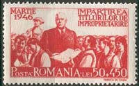
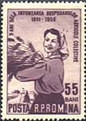

After
the W.W.II. Romania was practically occupied by the USSR, that imposed its
own (pro-communist, then later entirely communist) government and the unique
party system. To "celebrate" the new rulers of the country, Romanian post
has issued many stamps with Lenin (first on Jan. 21, 1949, not shown) and
even one with Stalin, as perforated and imperforated (see above on the
right, Sc. 718, Stalin's 70th birth anniversary). Stalin's portrait is shown
because the Romanian government will step by step implement the strategy
that Stalin implemented in the Soviet Union, in order to "socialize" the
agriculture of his country and to make the farmers, like all other social
strata, dependent on the communist state.
After
the W.W.II. Romania was practically occupied by the USSR, that imposed its
own (pro-communist, then later entirely communist) government and the unique
party system. To "celebrate" the new rulers of the country, Romanian post
has issued many stamps with Lenin (first on Jan. 21, 1949, not shown) and
even one with Stalin, as perforated and imperforated (see above on the
right, Sc. 718, Stalin's 70th birth anniversary). Stalin's portrait is shown
because the Romanian government will step by step implement the strategy
that Stalin implemented in the Soviet Union, in order to "socialize" the
agriculture of his country and to make the farmers, like all other social
strata, dependent on the communist state.
The first act of the communist
government in the farming domain was the agrarian reform law of

March 23, 1945. The big land owners (most of them fled the country) were expropriated and their land was distributed to peasantry. The reform was much less extensive that the reform of 1920, but was presented as the final solution of the agrarian problem. Above one can see on the sheet the Prime Minister Petru Groza personally distributing new property documents (sheet issued in June 1946, Mi. Block 31).
 This
measure won for a short time sympathizers and voters for the new government.
As usually after such reforms, a famine shortly followed (see the "Help to
Starving" sheet).
This
measure won for a short time sympathizers and voters for the new government.
As usually after such reforms, a famine shortly followed (see the "Help to
Starving" sheet).
The second act started in 1949, under the ruling of the First
Secretary of the Romanian Workers Party, Gheorghe Gheorghiu Dej (see below
the stamp, Sc. 1822; the sheet is not shown). The communist party officials, using
the forces of the Securitate (Secret Police) and of the army, started by
imposing to the majority of farmers the joining of the so called collective
farms (named "kolkhoz" in USSR).

The farmers were practically deprived of their ground and cattle and were
obliged to work together in these units. The recalcitrant who refused to
join the collective farms were crudely repressed. The opposition of the
peasantry was so important that the government hasn't dared to issue stamps
on this subject till 1951/1952, when was issued a set dedicated to the first
5 years plan, a "planning" method overtaken from the big brother and friend,
the Soviet Union.
 The
Plan started in 1951 and it failed, like many other similar plans started in
other communist countries. But not all of its actions failed, unfortunately.
For example on the green 7 Lei stamp (above, the first on the row) one can
read: "In 1955 the socialist sector will prevail in the agriculture." This
part of the plan will succeed, thanks to the repression of the farmers by
the members of the communist party, the secret police (the feared Securitate)
and when necessary to the army (the soviet troops being also present on the
Romanian soil).
The
Plan started in 1951 and it failed, like many other similar plans started in
other communist countries. But not all of its actions failed, unfortunately.
For example on the green 7 Lei stamp (above, the first on the row) one can
read: "In 1955 the socialist sector will prevail in the agriculture." This
part of the plan will succeed, thanks to the repression of the farmers by
the members of the communist party, the secret police (the feared Securitate)
and when necessary to the army (the soviet troops being also present on the
Romanian soil).

The stamp issued in 1956 and labeled "5 years from the founding of collective farms, 1951 - 1956" is one of the most interesting in the Romanian post - W.W.II philately. It was issued on July 23, 1956 and it was withdrawn after only a few days. The authors of the stamps have obviously taken the provisions of the Five Years Plan of 1951 as the starting point of collectivization, and not the earlier decision of the Communist party, that actually started the collectivization of agriculture. On October 18, 1956 the stamp was replaced by a new one, with the exactly same design (not shown, Sc. 1107), marked "7 years of collective farm, 1949 - 1956".
On April 27, 1962. was issued a set of 3 stamps (many thanks to Tom from UK for the scans), celebrating the Full Collectivization of the agriculture. This was the third act, the goal of the socialization of the whole Romanian farming being thus attained. The great result of this action will be that Romania, an important exporter of cereals before the W.W.II, will be obliged to import them, in order to feed its population.
A miniature sheet (not shown)
was issued on June 29, 1982, Sc. 3076. Logically enough, it celebrates the
20th anniversary of the full collectivization of the farming in Romania. But
it shows also the beginning of the forth and final farming act of the
communist regime - the so called modernization of villages. The idea came
from the ruler of the Communist Party, Nicolae Ceausescu, (not) shown
together with his wife on a miniature sheet (issued 1985, Scott 3270). He
started to move by force the peasantry into blocks of flats, in order to
better control it, and to destroy the individual houses.
The fall of the
Communism in 1989, but also in a certain way the opposition that came from
many villages (and less from governments) of Western Europe, the Operation
Romanian Villages, that has braked a bit this last plan of the
collectivization of the farmers' life.